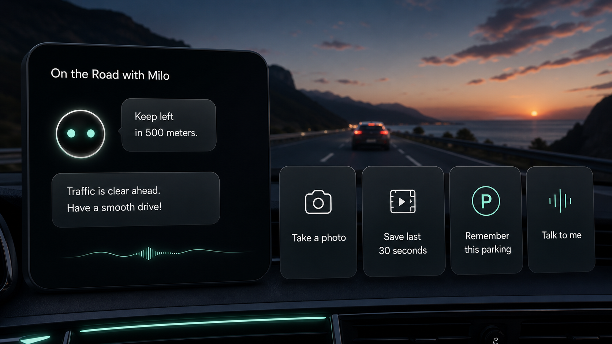
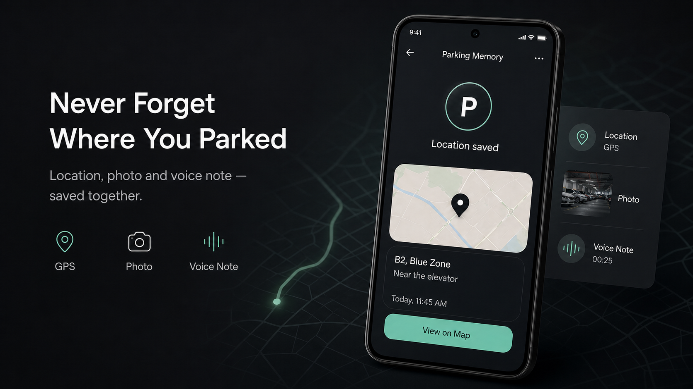
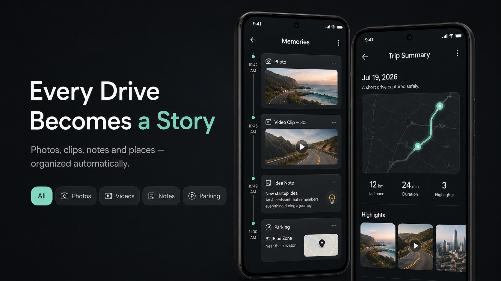

Capture
Log meals, stool, symptoms, photos, and notes without breaking your day.
Our flagship health product
In & Out brings food, stool, symptoms, and habits into one simple daily record—then helps you spot the patterns that matter.


From isolated symptoms to a useful story
Digestive health is rarely explained by one meal or one moment. In & Out is designed around continuity: easy logging today, better questions tomorrow.
Log meals, stool, symptoms, photos, and notes without breaking your day.
Bring daily signals together so recurring patterns become easier to notice.
Use trend views and an AI coach to turn your own history into practical next steps.

For wellness tracking and education—not diagnosis or medical advice.
Milo · Hardware + software
Milo is an AI co-driver that upgrades the camera already in your car. Use your voice to capture moments, remember where you parked, organize notes, and build a searchable memory of every drive.
Working prototype
One product, two layers
Edge hardware sees and hears the moment. Milo’s software turns that context into actions, memories, and a calmer way to interact while driving.
Wide-angle camera, microphone array, GPS, edge AI compute, local storage, and a clear status light in one compact retrofit device.

A mobile companion for photos, clips, parking locations, trip summaries, and notes—organized and searchable after the drive.


“Take a photo.” “Save the last 30 seconds.” “Remember this parking spot.”

Location, photo, and voice note saved together.

Photos, clips, notes, and places organized automatically.
The wider ZenTech portfolio
Trusted working professionals help overseas Chinese job seekers understand the room—not just polish the application.

Our design principle
Early access
Join a product trial, share feedback, or talk to us about a partnership.